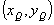
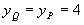
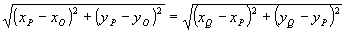
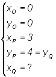
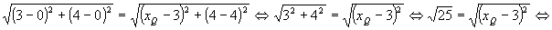
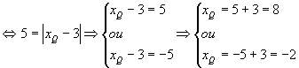
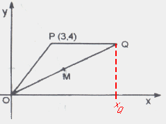

Queremos o par ornedano

, coordenadas o ponto Q.Temos que PQ é paralelo a Ox, então sua ordenada é constante e igual a 4(mesma ordenada de P; então escrevemos

.Por hipótese a distância de O a P é igual à distância de P a Q, então:
dOP = dQP Þ

I
mas:

Substituindo esses valores em I, teremos:



Mas podemos observar na figura que a abcissa de Q é positiva, logo xQ = 8.
Portanto as coordenadas de Q são: (8, 4).
Conclusão: O item 01 é verdadeiro.
Voltar